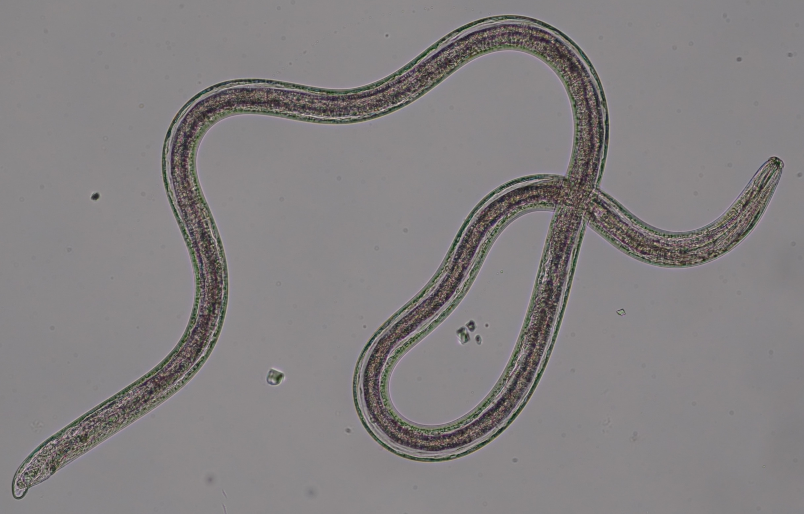
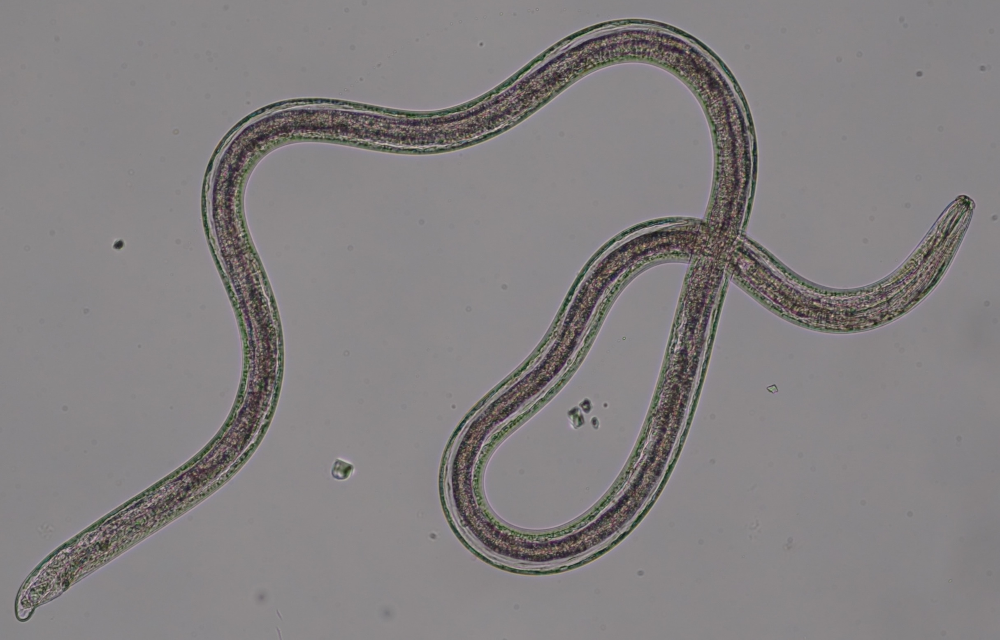

Projects
Single Nematode Genome Project
Single worm long read genome sequencing
Obtaining sufficient genetic material from a limited biological source is currently the primary operational bottleneck in studies investigating biodiversity and genome evolution. In this study, we employed multiple displacement amplification (MDA) and Smartseq2 to amplify nanograms of genomic DNA and mRNA, respectively from individual Caenorhabditis elegans. Although reduced genome coverage was observed in repetitive regions, we produced assemblies covering 98% of the reference genome using long-read sequences generated with Oxford Nanopore Technologies (ONT). Annotation with the sequenced transcriptome coupled with the available assembly revealed that gene predictions were more accurate, complete and contained far fewer false positives than de novo transcriptome assembly approaches. We sampled and sequenced the genomes and transcriptomes of 13 nematodes from Dorylaimia, Enoplia, and early-branching species in Chromadoria. These free-living species had larger genome sizes, ranging from 136.6-738.8 Mb, compared to those of the parasitic lifestyle. Nine mitogenomes were fully assembled and displaying a complete lack of synteny to other species. Phylogenomic analyses based on the new annotations revealed strong support for Enoplia as sister to the rest of Nematoda. Our result demonstrates the robustness of MDA in combination with ONT, paving the way for the study of genome diversity in the phylum Nematoda and beyond.
Keywords: single nematode, WGA, long reads sequencing, de novo genome assembly
In this study, we demonstrated the feasibility of generating genome assemblies from single adult nematodes using multiple displacement amplification. By testing the protocols on C. elegans, we were able to fully quantify the extent of bias and address it with existing analysis pipelines. With a genome size of 136.6-738.8 Mb in 13 nematodes, sequencing on a single MinION flowcell can be expected to provide approximately 37.8X depth of coverage. We demonstrate that a genome assembly and accurate gene annotations can be achieved with this workflow and further sequenced the genomes of 13 free-living nematodes. Of these genomes, four are the first reported in the Enoplia clade revealing their unusually large genome sizes and structures. Through phylogenomics, we established Enoplia as sister to the phylum Nematoda, suggesting a marine origin in the last common ancestor of nematodes. We overcame the stage of obtaining axenic culture whilst assembly and annotation can be achieved within two weeks of nematode isolation. Assuming that 1ug is required for long-read sequencing, combining MDA with ONT sequencing thus provides a cost- and labour- effective solution to generate complete assemblies in organisms with as little as 50 picograms of starting material.
 
